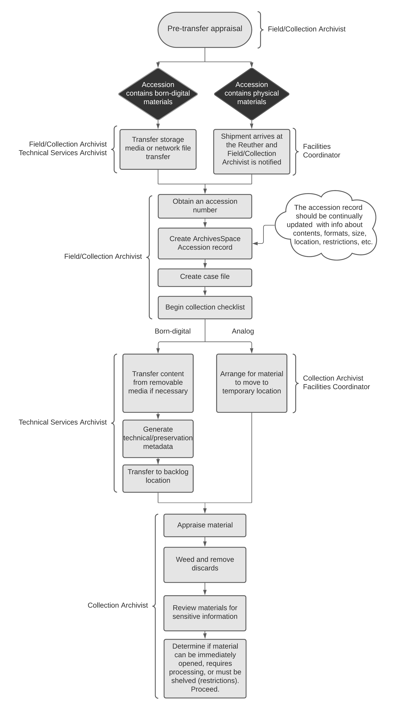

Accessioning Overview¶
Accessioning Workflow Diagram¶

Accessioning Goals¶
The Reuther Library accessions incoming archival collections with the following goals in mind:
- To open unrestricted collections within 90 days of their arrival at the archives. Exceptions include those with restrictions, some accruals, and large collections.
- To provide collection level description with minimal inventory information (if supplied by donor or field archivist) about every collection in the archives.
- To incorporate MPLP into accessioning and affectively merge accessioning with processing.
- To reduce space issues by preventing non-historical material from being shelved in the stacks and saved on digital storage devices.
- To alleviate backlog issues and enhance researcher accessibility to collections.
- To streamline the accessioning process and remove barriers to effective collection management.
Accession Types¶
- New: material received for a collection that is only now being established, i.e., the Reuther has not received any collection materials previously
- Addition: material received for an established collection that was previously thought complete
- Accrual: material received for a collection that receives ongoing deposits
Accessioning Workflow¶
Accessioning is a combined effort between the Collection Archivist or Field Archivist (whichever is applicable), the Reuther Facilities Coordinator, and the Technical Services Archivist. Collection Archivists are responsible for their own accessioning (this includes AV materials). The Field Archivist is responsible for everything else.
Outlined below is the workflow followed for each incoming collection.
- Field/Collection Archivist conducts any required pre-transfer appraisal, donor negotiations, etc.
- If the accession contains physical materials:
- Field/Collection Archivist notifies the Facilities Coordinator know that a shipment of materials is expected
- Facilities Coordinator notifies the Field/Collection Archivist by email the day a shipment arrives
- If the accession contains born-digital materials:
- Field/Collection Archivist notifies the Technical Services Archivist that an accession containing born-digital material is expected
- If the born-digital materials are on physical storage media (CDs, DVDs, hard drives, etc.), Field/Collection Archivist oversees physical transfer of materials as above
- If the born-digital materials are on a network location (the Internet, cloud storage, an organization's shared drive, etc.), Field/Collection Archivist or Technical Services Archivist oversees and carries out the direct transfer of digital materials
- Field/Collection Archivist obtains an accession number (if not previously done), creates an ArchivesSpace accession record and linked Processing New event as soon as possible after the materials are taken into the Reuther's custody and,
- Completes case file (paper, electronic, or both) with: deposit agreement/deed of gift, correspondence, restrictions, inventory (if provided), and original/draft transcripts (if oral history)
- Begins a collection checklist and files it in the electronic case file
- For analog materials, the Field/Collection Archivist:
- Arranges for the material to be moved to its temporary location (i.e., staging area or archivist’s processing area)
- If material was not appraised onsite before arrival at the archives, the archivist appraises material and performs minimal weeding and rehousing, if necessary (i.e., preservation or access concerns)
- For born-digital materials, the Technical Services Archivist stabilizes the material within 90 days
- Transfers content off of physical storage media, if necessary
- Generates preliminary technical and preservation metadata and PII scans
- Transfers content to a shared location for further assessment by the Field/Collection Archivist
- Field/Collection Archivist determines if material can be immediately opened, requires processing, or must be shelved per restrictions, and proceeds accordingly
- Proceed based on processing next steps:
- Immediately opening material (no restrictions): Opening Accessions
- Processing material: Processing
- Leaving as backlog and shelved per restrictions: Update accession record with restriction information and date when material can be processed and opened. Contact Facilities Coordinator to receive physical location or Technical Services Archivist to transfer digital content to a secure backlog location
- Update ArchivesSpace accession record to include additional information obtained during the appraisal, including but not limited to:
- Basic Information > Content Description
- Basic Information > Condition Description
- Basic Information > Inventory
- Basic Information > Access Restrictions
- Basic Information > Use Restrictions
- Dates
- Extents
- Proceed based on processing next steps:
Accession Numbers¶
Accession numbers will follow an alphanumeric formula:
- A 2-4 letter prefix denoting the top-level record group (i.e., labor, urban, or university) and primary department of administration (i.e., Manuscripts & Records, Audiovisual, Oral history, or Library)
- A numeric code (with leading zeros to allow for 6 spaces)
The result is an 8-10 digit accession number, depending on length of the prefix.
For example:
| Collection | Accession Number |
|---|---|
| Jerome Cavanagh Papers | UP000379 |
| UAW Research Department Records | LR000350 |
| Stephen Lighthill Film Collection | UAV001622 |
| WSU Office of the President: Clarence Hilberry | WSR000001 |
AV, library, or oral history material accessioned as part of a manuscript or records collection will maintain that collection’s accession number regardless of whether the material is physically separated (e.g., LR000100 not LAV000100 for audio tapes from a labor collection that are sent to the AV department for storage) or comes in as an accrual (e.g., LR000100 not LOH000100 for oral histories). The only exception is for legacy collections that were previously processed whose material was physically separated. In these cases, when describing the AV, oral history, or library materials, use the same numeric code as the associated manuscript or record collection, but apply the prefix for the material type.
For example:
| Collection | Accession Number |
|---|---|
| Jerome Cavanagh Papers | UP000379 |
| Jerome Cavanagh Photographs | UAV000379 |
| Jerome Cavanagh Library | UL000379 |
A collection’s numeric code is derived from the sequential numbering system already in place in the Accession Numbers spreadsheet. A new collection is assigned the next number in the sequence. Deposits or donations from one donor are assigned numbers per department or individual, NOT one all encompassing number. Accruals from one department/individual will be tracked by date received.
Prefixes¶
| Prefix | Description |
|---|---|
| LR | labor records (organizational records) |
| LP | labor papers (personal papers) |
| LAV | labor audiovisual |
| LOH | labor oral histories |
| LL | labor library |
| UR | urban records |
| UP | urban papers |
| UAV | urban audiovisual |
| UOH | urban oral histories |
| UL | urban library |
| WSR | Wayne State records |
| WSP | Wayne State papers |
| WSAV | Wayne State audiovisual |
| WSOH | Wayne State oral histories |
| WSL | Wayne State library |
Oral histories that come in as reference duplicates or discrete projects require their own accession record. When applicable, oral histories will be accessioned on a project basis. In those cases, each individual interview will require a suffix to the accession number. These should be sequential numbers, beginning with 1 and separated from the main accession number by a period (.). For example, an urban oral history project given the numeric code of “100” and containing 10 interviews would include the following accession numbers: UOH000100.1, UOH000100.2, UOH000100.3, etc.
Collections processed prior to August 2011 may also have alpha suffixes to differentiate separate collections with the same numeric code. These will be separated by an underscore (_) and consist of acronyms or names denoting an office or person. A good example: LR000221_AWOC refers to the UFW Agriculture Workers Organizing Committee Records while LR000221_velasco refers to the UFW Vice President: Peter Velasco Records.